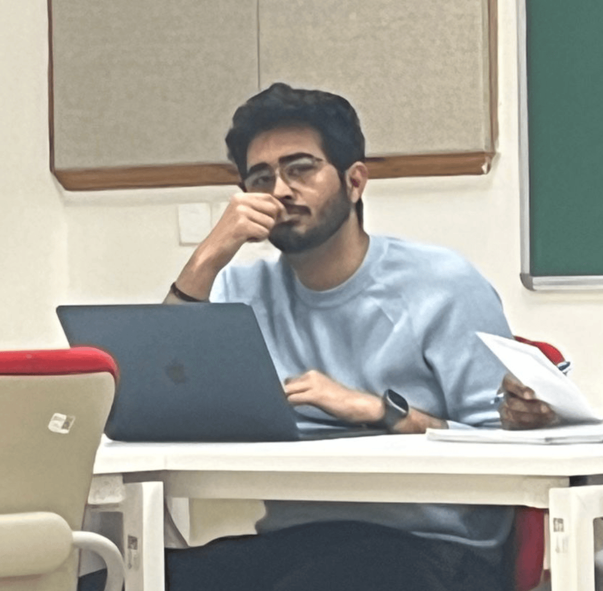

I study how digital infrastructure reshapes the relationship between states and citizens in India and the Global South. My work sits at the intersection of data governance, digital rights, and public policy — examining how regulatory frameworks like India's DPDP Act construct (and constrain) digital citizenship.
Before Ashoka, I worked across parliamentary offices, policy think tanks, and research institutions — from drafting questions raised in the Rajya Sabha to co-authoring a runner-up best paper at the Takshashila Institution. I hold a BA (Hons) in Political Science from Ramjas College, University of Delhi.
Argues that India's DPDP Rules construct "child protection" through surveillance architecture rather than rights frameworks.
Comparative analysis of policing systems across 12 countries. Runner-up for Best Paper.